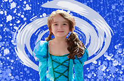

Memories of my Primary Life

My primary life was filled with unforgettable moments that have shaped who I am today, i went to three different primary schools in my younger years, and I will share a few memories of each below. Above is a picture of me that you may recognise, however it has been altered to allow my primary dreams to be shown. I hope you enjoy my memories
School 1
I stayed here for one whole year. Prep. i remember my families name being coinsidendly on one of the bricks that had a list of important people, and I always thought it was for us. I remember literally nothing
School 2
this school was a private all girls school. I made alot of friends, but i lost myself. My sister and I were not fit for the life of conformity that our school gave us. So we moved, btu at the school I had lots of opportunities. I played trombone and was in choir. This was my experience in my second primary school
heres the school: check it out
School 3
This was my final school until I reached high school. I started in year 4 to year 6. I picked up saxaphone and joined another choir despite not being able to sing. I learned alot of basic life lessons and continued my passions to highschool.
If you have any more queries about my schooling experience: contact me here
Email: WYL0006@PHSC.vic.edu.au